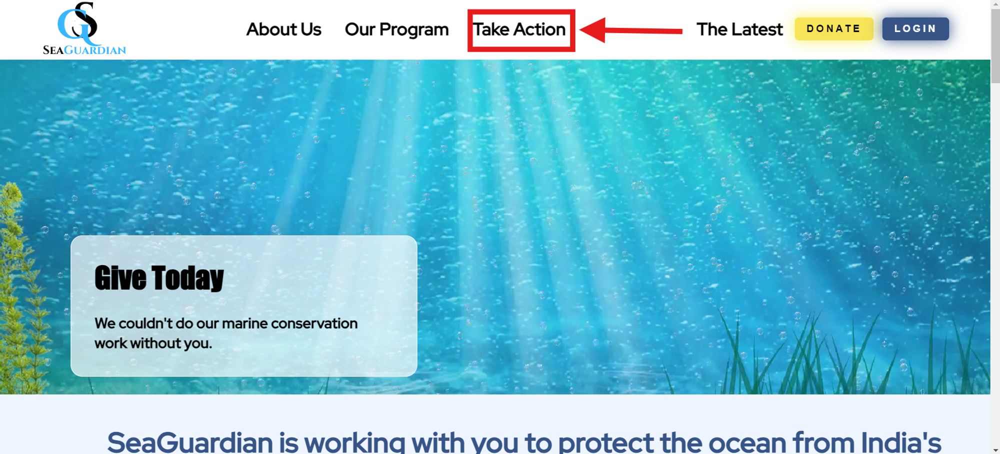
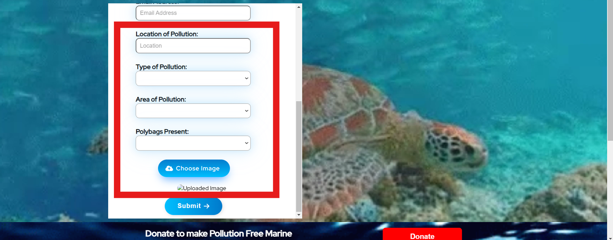
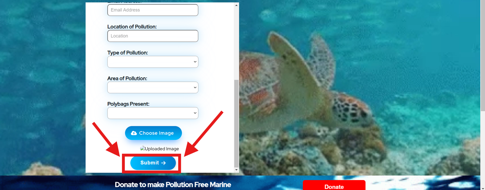

Articles in this section
How To Report An Accident?
To initiate the reporting process for an incident, please locate and click on the prominent "take
action" button situated at the uppermost section of the page.

After clicking on the "Take Action" button, you'll find yourself on a dedicated page designed
specifically for reporting incidents. Your first step is to provide your personal credentials to ensure
accuracy and follow-up. This includes essential details such as your full name, date of birth,
residential address, contact number, and email address.
Next, you'll be prompted to describe the location of the incident in detail. This should include
specifics such as the address or nearby landmarks to pinpoint the exact area. Additionally, you'll need
to specify the type of pollution observed, whether it's air, water, or land pollution, and provide a
brief description of the situation.
To enhance the report and provide clearer understanding, you'll also have the option to attach an image
related to the incident. This could be a photo showcasing the pollution, the affected area, or any other
relevant visuals that support your report.

Once you've completed filling in all the required information, simply proceed by clicking on the "SUBMIT
→" button to formally file the incident report. Your action will greatly assist us in promptly
addressing and resolving the issue at hand. Thank you for taking the time to bring this matter to our
attention.
